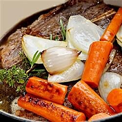

Stove Pot Roast Recipe
Stove Pot Roast With Mashed Potatoes
A hearty meal for the dinner table!

Wonderful flavors make the meat the star of the dish by combining simple ingredients for a mouth-watering
meal.
Our southern family has passed this recipe down for many years and enjoyed many memories dining on this
delicious home-cooked classic.
Save broth from roast to make a delicious gravy using flour or cornstarch, whichever is preferred.
Ingredients to make:
- 1 (3 pound) beef chuck roast
- Salt and ground black pepper to taste
- 4 (10.5 ounce) cans condensed beef broth(Campbell's)
- 1 cup water
- 1 white onion, cut into large wedges
- 5 cloves garlic
- 1 (16 ounce) package carrots, peeled
- 1 sprig fresh rosemary
- Mashed potatoes
- 5 pounds Yukon Gold potatoes, peeled and diced
- 1 (12 ounce) can evaporated milk, or as needed
- 1/2 cup butter
- salt to taste
The steps to make the recipe:
- Season chuck roast with salt and black pepper; sear in a large, deep skillet or Dutch oven over
medium heat
until browned,
about 10 minutes per side.
- Pour beef broth and water into the skillet with roast. Arrange onion wedges and garlic cloves around
the
meat.
Spread carrots atop roast and place sprig of rosemary atop carrots.
Turn heat to medium-low and simmer until tender, about 6 hours.
- Cover potatoes with water in a large pot and bring to a boil; reduce heat to low and simmer until
tender,
about 30 minutes. Drain.
Mash potatoes with butter and half the evaporated milk until smooth;
slowly mash remaining evaporated milk into potatoes to achieve the desired consistency. Season with
salt.
- Remove 1 or 2 cloves of garlic from skillet and mash cloves on top of the roast; serve with mashed
potatoes.